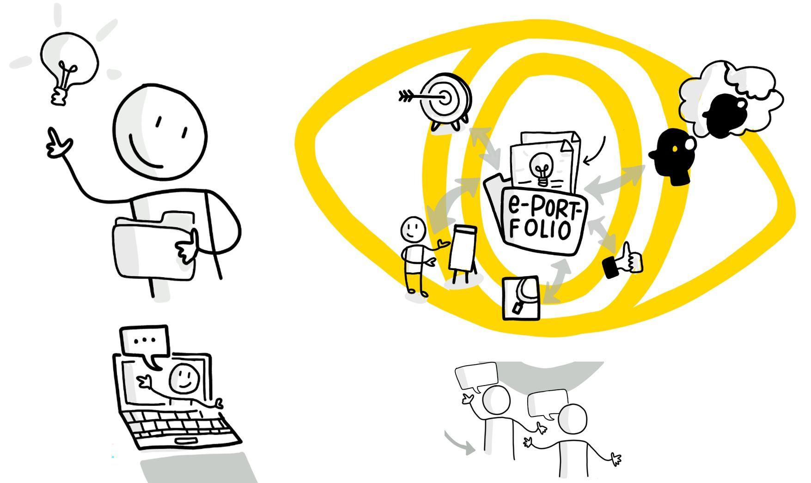

Introduction
When six of us started our first lernOS Circle in September 2019, it was not yet clear where this learning journey would lead us finally. But we were aware that we wanted to connect this experiment with something that could give something back to others who would try it after us.

Basically each of us had his own topic that he pursued during the circle time. Nevertheless, the shared experience of supporting each other and exchanging information online enabled us to make good progress on all of our topics.
Therefore the decision was made relatively quickly to continue with three of us after the Circle and to create two own guides (Circle Guides), which should enable others to gain these experiences themselves through various innovative learning methods. So in the end one of these two guides was created and we hope that it can accompany you well on your learning journey.
Central objectives of this ePortfolio Learning Guide
This Circle Guide would like to show you a learning method with which you can continue your education in an exciting future topic and exchange and network with other learners.
You will be able to learn a basic and overview knowledge of the ePortfolio method and Social Software.
At the same time you will build or further develop your own ePortfolio with a suitable software and work out a detailed understanding of an exciting topic with others.
We are already looking forward to your field reports and wish you a lot of fun!
Basics
In the beginning: If you are thinking about doing this Circle, you might want to have a look at the following basics that we have put together for you:
-
What is actually behind the idea of an ePortfolio and what added value can it offer?
-
What are the components of an ePortfolio?
-
How does the management of an ePortfolio work?
-
What does it mean to reflect with an ePortfolio?
Using the ePortfolio learning method we would like you to work together in a circle on an exciting topic of your choice. You can builc up an expertise that is visible online. It also gives you the opportunity to network with others on this topic and build up a new community of practice or join one. But now we will take a closer look at the basics at first.
1. What is actually behind the idea of an ePortfolio and what added value can it offer?
The portfolio method originally comes from the artistic field, in which works made with skill (= artifacts) are put together in a folder (portare = carry and folio = piece of paper in Latin). In addition, one discusses the contents of this portfolio with others in order to be able to develop further in the process and later even apply for a job. This was transferred to electronic use with the advent of digital media and the Internet. This also opens up more possibilities for designing an ePortfolio.
As a further introduction we would like to recommend a small online tutorial which Marcel prepared in 2009 on this topic: ePortfolios in use (length approx. 9 min.)

As the native language is German please activate subtitles and choose English via the gear setting next to it:
For those who prefer it in written words we can describe ePortfolios briefly and concisely as a hybrid form of online learning using various social software. On the one hand this software serves to transparently present oneself as a person with ones competencies and to network with others (= social networking). On the other hand it is used in combination with an appealing way of documenting the learning process and results using digital media (= social publishing). What has been learned is reflected in the process and specifically put up for discussion (see Bernhardt / Kirchner 2007: 82 f. & Kirchner 2015: 32 f.).

Little scientific exkursion (optional):
For those who would like to know it in more detail the following classification is recommended (quoted from Kirchner 2015: 32ff. and translated corresponding into English):
The original classification in the German-speaking countries comes from the Salzburg Research Society EduMedia:
"E-portfolio is a digital collection of works made with skill (= lat. artefacts) of a person who wants to document and illustrate the product (learning outcomes) and the process (learning pathway/growth) of his or her competence development in a certain period of time and for certain purposes. The person concerned has made the selection of artefacts independently and organised them in relation to the learning objective. He/she, as the owner, has complete control over who, when and how much information from the portfolio can be viewed. (Hornung-Prähauser et al. 2007: 14 and Hilzensauer/Hornung-Prähauser 2006:4)
(see also similar classification of terms on e-teaching.org - German language only)
According to this classification the product and process were always in the foreground at first but the feedback loop was neglected and the competencies required for this were only indicated. In addition, metaphorically speaking, one also speaks of a showcase of ones own learning (Bräuer 2000: 22, quoted after Brunner et al. 2008: 35 as well as Bauer/Baumgartner 2012). This is at least the technological, rather tool-oriented perspective.
From a pedagogical-didactic perspective, however, it is classified more as a (didactic) method of independent and competence-based learning and ist application of which is supported by various processes (including selection, reflection and presentation) with its own objectives and planning and can even go as far as a holistic institutionally controlled pedagogical concept. In the past this has led to an increasing confusion of terms.
Therefore the attempt was made to define an integrating view as a method and to link it to social software:
According to this a social software portfolio is a specific form of web-based self-presentation via an e-portfolio. The digital processing of the artefacts offers the owner additional media options for presenting learning products (especially in the form of audio and video). By means of social software and especially the use of weblogs such a portfolio also enables the owner to continuously reflect his personal development of (media) skills and thus encourages reflection in the self-directed connective learning process. This is particularly supported by offering visitors the opportunity to provide feedback on the content to the owner which in the case of e-portfolio blogs is expressed primarily through the comment function or mutual linking (quote from Kirchner 2015: 36)
2. What are the components of an ePortfolio?
Here there is a wealth of possibilities and tools that can be used in different ways. The following is a recommendation based on our previous experience.
Everyone of us already uses different online tools to create content on the web even if its only to write an e-mail in a small circle or to design a public website. This can be seen as a portal or gateway to the Internet. With the help of this personal learning portal the portfolio method can be applied directly, e.g. by having your own blog and using a social network such as LinkedIn or Twitter to provide and distribute your content (= artefacts).
In a broader sense content is generated through processes of setting goals, collecting, selecting, linking and reflecting and finally prepared for presentation, dissemination and possible evaluation (see Kirchner 2015: 57 with reference to Hilzensauer, Hornung-Prähauser 2006: 5 or Hornung-Prähauser et al. 2007: 15). In the narrower sense relevant content is taken up as a kind of an eye into the web and published in a suitable manner via a showcase, e.g. as blog entries and tweets (see Kirchner 2015: 57 with reference to Bräuer 2000: 22 and Baumgartner / Bauer 2013).
The following infographic visually summarizes these processes:
According to a slightly adapted model of self-directed connective learning with e-portfolio blogs (Kirchner 2015: 58, Figure 11) as a further development following Bernhardt / Kirchner 2007: 89 and with reference to Hilzensauer, Hornung-Prähauser 2006: 5
3. How does the management of an ePortfolio work?
When using an ePortfolio and applying the associated method the following processes are essentially carried out which have already been briefly mentioned above (see Hornung-Prähauser et al. 2007: 15):
- Setting goals to clarify the procedure and framework conditions for managing the ePortfolio.
- Collecting, selecting and linking the contents in order to document the competence development in the learning process.
- Reflecting in the ePortfolio in order to critically question ones own performance and analyze the learning goal.
- Presenting and passing on the results to third parties in order to make the competence development visible.
- Assessing and evaluating the ePortfolio in order to be able to assess the competence development holistically (optional).
4. What does it mean to reflect with an ePortfolio?
Therefor we recommend [the first two minutes]{.underline} of Marcels second online tutorial:
ePortfolios in use - part 2 (total length approx. 8 min.)

As the native language is German please activate subtitles and choose English via the gear setting next to it:
Typical questions for orientation which you should ask yourself again and again for reflection and which should be recorded as answers in the ePortfolio are:
- What have I learned so far?
- Where do I stand today?
- What should be my next steps?
(Atwell 2007, Hornung-Prähauser et al. 2007)
Now you have received all the important basic information about learning with ePortfolios and you can continue on your learning path.
Sources
-
Attwell, Graham (2007): E-Portfolio Entwicklung und Verwendung. Ins Deutsche übersetzt von der Salzburg Research Forschungsgesellschaft. http://blip.tv/pontydysgu/e-portfolio-entwicklung-und-verwendung-416096 [last possible access on 19.10.2013]. Available alternative content on slideshare: https://de.slideshare.net/GrahamAttwell/eportfolio-development-and-implementation [access on 12.10.2020]
-
Bauer, R. / Baumgartner, P. (2012): Schaufenster des Lernens: Eine Sammlung von Mustern zur Arbeit mit E-Portfolios. Münster: Waxmann Verlag.
-
Baumgartner, P. / Bauer, R. (2012): Didaktische Szenarien mit E-Portfolios gestalten: Mustersammlung statt Leitfaden. In: Csanyi, G. / Reichl, F. / Steiner, A. (Hrsg.): Digitale Medien - Werkzeuge für exzellente Forschung und Lehre. Medien in der Wissenschaft, Band 61, S. 383-392. Münster: Waxmann.
-
Baumgartner, P. / Zauchner, S. / Bauer, R. (Hrsg.) (2009): The Potential of E-Portfolios in Higher Education. Innsbruck/Wien/Bozen: StudienVerlag.
-
Bernhardt, Thomas / Kirchner, Marcel (2007): E-Learning 2.0 im Einsatz - Du bist der Autor! - Vom Nutzer zum WikiBlog-Caster. vwh-Verlag, Boizenburg.
-
Bräuer, Gerd (2000): Schreiben als reflexive Praxis: Tagebuch, Arbeitsjournal, Portfolio. Freiburg im Breisgau: Fillibach-Verlag.
-
Brunner, I. / Häcker, T. / Winter, F. (Hrsg.) (2008): Das Handbuch Portfolioarbeit (2. Auflage). 1. Auflage 2006. Seelze-Velber: Kallmeyer.
-
Hilzensauer, W. / Hornung-Prähauser, V. (2006): ePortfolio -- Methode und Werkzeug für kompetenzorientiertes Lernen. Salzburg Research Forschungsgesellschaft m.b.H. -- EduMedia [PDF]. Online verfügbar unter: http://edumedia.salzburgresearch.at/images/stories/EduMedia/Inhalte/eportfolio_srfg.pdf[last possible access on 03.12.2012]. Alternative link on: https://docplayer.org/16445308-Eportfolio-methode-und-werkzeug-fuer-kompetenzbasiertes-lernen.html access on 12.10.2020
-
Hornung-Prähauser, V., Geser, G., Hilzensauer, W., Schaffert, S. (2007): Didaktische, organisatorische und technologische Grundlagen von E-Portfolios und Analyse internationaler Beispiele und Erfahrungen mit E-Portfolio-Implementierungen an Hochschulen. Salzburg: Salzburg Research Forschungsgesellschaft und fnm-austria. Online verfügbar als PDF unter: http://www.fnm-austria.at/projekte/ePortfolio/Dateiablage/view/fnm-austria_ePortfolio_Studie_SRFG.pdf last possible access on 15.02.2013. Alternative link on: https://www.yumpu.com/de/document/view/32927444/didaktische-organisatorische-und-technologische-grundlagen-von- [access on 12.10.2020]
-
Kirchner, Marcel (2015): Social-Software-Portfolios im Einsatz -- Zwischen Online-Lernen und Medienkompetenz im selbstgesteuert-konnektiven Lernalltag. vwh-Verlag, Boizenburg.